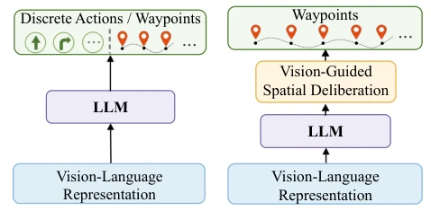
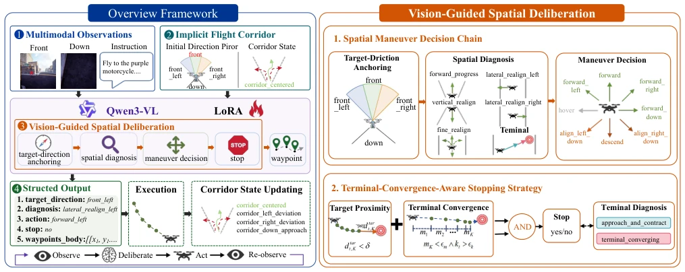
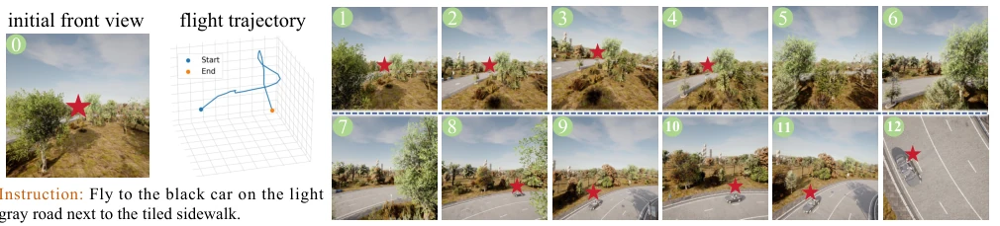
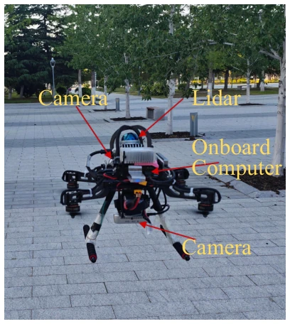
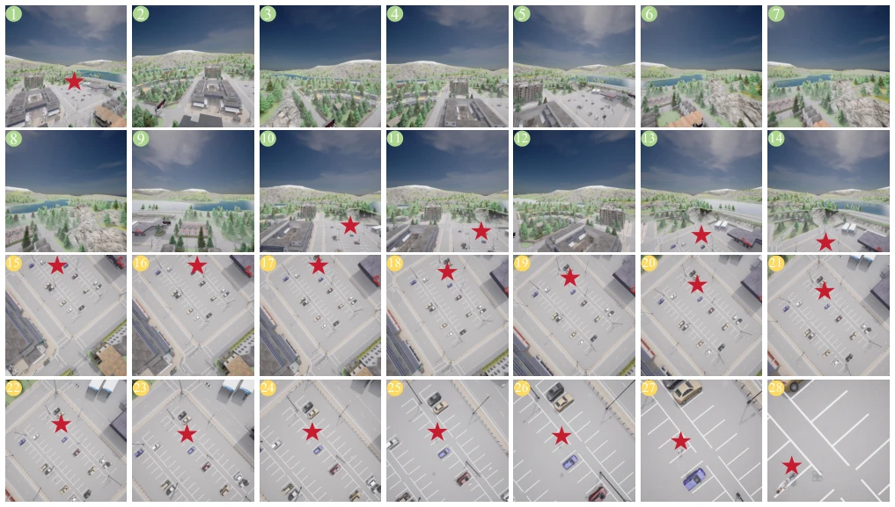
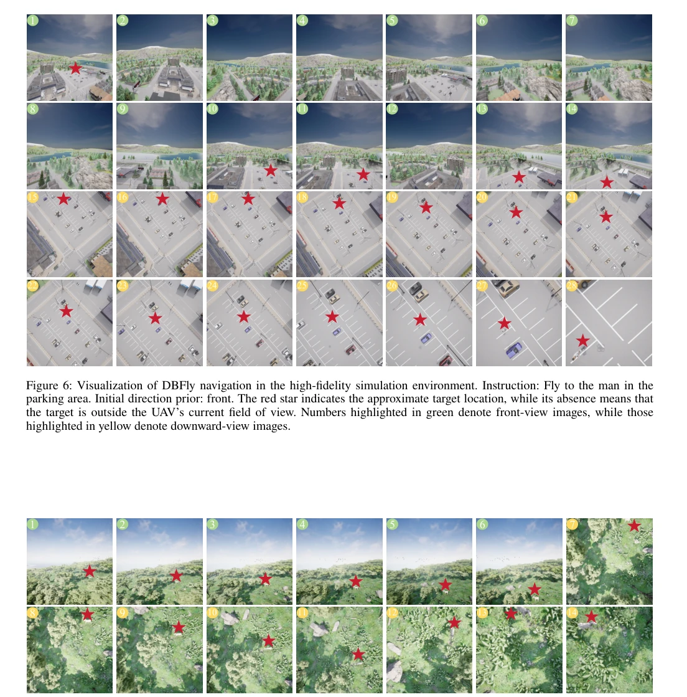
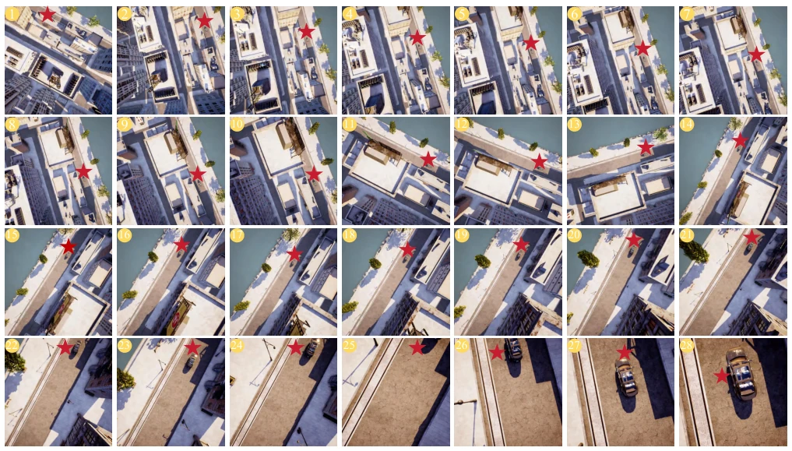
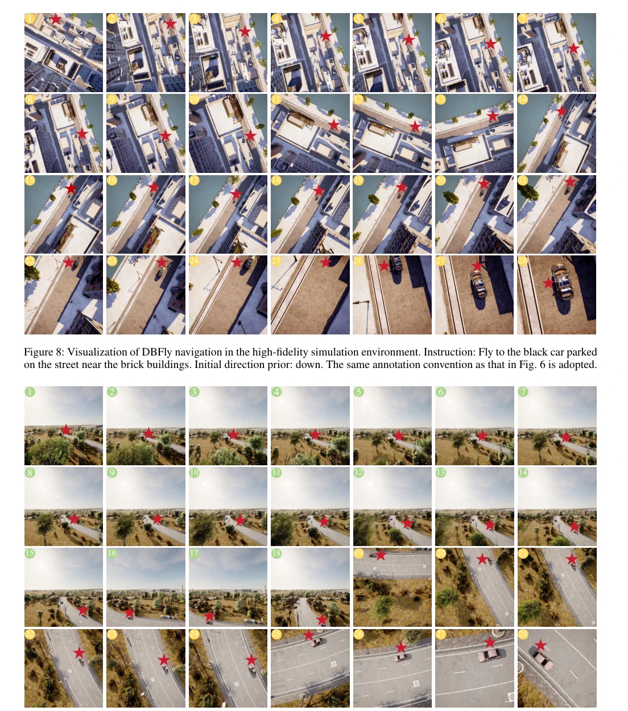

This paper imposes a "cerebral cortex" on UAV navigation, with the slogan "think before flying" vigorously promoted. The core of DBFly lies in rejecting "black-box direct connection", transforming the crude practice of directly converting visual language to actions into step-by-step reasoning. Although the Qwen3-VL foundation is sufficiently large, inference latency during physical UAV deployment is a concern, after all, UAVs are not servers. The most ingenious part is the "implicit corridor" and "convergence stop", solving the long-standing "arrived but cannot stop" issue, no longer relying on heuristic external detection. However, the authors admit they did not implement world model prediction for the future; this point in complex dynamic scenarios might still rely on luck, after all, even after "thinking thrice", one must still depend on external conditions. Overall, this is a "rational return" in the VLN field, but computing power costs might cause edge devices to struggle, making it suitable for cloud inference but not for pure edge deployment.
研究动机Motivation
现有 UAV-VLN 方法（如 UAV-ON [Xiao et al. 2025], TravelUAV [Wang et al. 2025], 3DG-VLN [Xue et al. 2026]）大多采用“视觉 - 语言直接映射动作”的范式。这种端到端黑盒导致语义理解与底层控制脱节（semantic-control misalignment），无人机容易做出 erratic maneuvers 且难以可靠终止。地面 VLN 研究已证明显式推理优于直接预测（Lin et al. 2025a），但 3D 连续控制下的推理机制尚属空白。本文旨在解决两个核心耦合挑战：如何持续锚定目标并执行合适机动，以及何时可靠终止飞行。直接映射迫使模型跨越抽象概念与底层控制的鸿沟，导致生成的航点偏离实际空间状态，且依赖观测隐式学习停止决策缺乏明确证据，易触发过早或不稳定终止。
Existing UAV-VLN methods (such as UAV-ON [Xiao et al. 2025], TravelUAV [Wang et al. 2025], 3DG-VLN [Xue et al. 2026]) mostly adopt the "visual-language direct mapping to actions" paradigm. This end-to-end black box leads to semantic understanding and low-level control disconnection (semantic-control misalignment), making UAVs prone to erratic maneuvers and difficult to terminate reliably. Ground VLN research has proven explicit reasoning superior to direct prediction (Lin et al. 2025a), but the reasoning mechanism under 3D continuous control remains a gap. This paper aims to solve two core coupled challenges: how to continuously anchor the target and execute appropriate maneuvers, and when to reliably terminate flight. Direct mapping forces the model to cross the gap between abstract concepts and low-level control, causing generated waypoints to deviate from actual spatial states, and relying on observation-based implicit learning for stop decisions lacks clear evidence, easily triggering premature or unstable termination.

Figure 1: Comparison of two UAV-VLN navigation paradigms. (a) Existing methods directly map vision- language representations to action outputs, (b) whereas DBFly introduces vision-guided spatial deliberation before waypoint generation, as detailed in Fig. 2.
DBFly is based on Qwen3-VL fine-tuned via LoRA, constructing an "Observation-Reasoning-Action" closed loop. The overall process is divided into: 1) Implicit flight corridor construction: Using initial direction priors to generate geometric references, combining current position to calculate corridor states (such as corridor_centered/deviation), providing soft constraints. 2) Spatial Maneuver Decision Chain (SMDC): Proceeding in three steps. First is Target-direction anchoring, determining relative orientation; second is Spatial diagnosis, identifying current dominant needs (such as lateral_realign); finally is Maneuver decision, abstracting motion intentions (such as forward_down). 3) Terminal convergence perception stop strategy: Jointly evaluating target distance and short-horizon motion convergence (κt), stopping only when both proximity and convergence are satisfied, avoiding too early or too late. Output serialization optimization allows subsequent decisions to depend on prior reasoning.

Figure 2: Overall framework of DBFly. Built upon Qwen3-VL, DBFly integrates language instructions, egocentric visual observations, an initial target-direction prior, and the online corridor state to perform vision-guided spatial deliberation. The spatial maneuver decision chain and terminal-convergence-aware stopping strategy jointly guide the generation of geometrically consistent waypoints and reliable stopping decisions.
实验Experiments
在 UAV-VLN-FOV 基准上测试，包含 Seen/Unseen-Object/Unseen-Scene 三组。对比基线包括 Random, Fixed, Qwen2.5/3-VL, TravelUAV, 3DG-VLN。指标涵盖 SR, OSR, NE, SPL。DBFly 在 Test 集 SR 达 62.50%，较 SOTA 3DG-VLN 提升 23.68 个百分点。消融实验显示，移除 VGSD 导致 SR 大幅下降，证明空间推理至关重要；移除停止策略（Stop）导致 SR 降 13.45%，验证了收敛判据的有效性。真机实验验证了仿真到现实的泛化能力，无人机能稳定飞向目标并准确悬停。
Tested on the UAV-VLN-FOV benchmark, containing Seen/Unseen-Object/Unseen-Scene three groups. Comparison baselines include Random, Fixed, Qwen2.5/3-VL, TravelUAV, 3DG-VLN. Metrics cover SR, OSR, NE, SPL. DBFly achieves an SR of 62.50% on the Test set, an improvement of 23.68 percentage points over SOTA 3DG-VLN. Ablation experiments show that removing VGSD leads to a significant drop in SR, proving spatial reasoning is crucial; removing the stop strategy (Stop) leads to a 13.45% drop in SR, verifying the effectiveness of the convergence criterion. Real-machine experiments verify sim-to-real generalization ability, where the UAV can fly stably to the target and hover accurately.

Figure 3: Visualization of DBFly navigation in the high-fidelity simulation environment. The red star indicates the approximate target location, while its absence means that the target is outside the UAV’s current field of view.

Figure 5: UAV platform for real-world flight experiments.
其他图片Other Figures

Figure 6: Visualization of DBFly navigation in the high-fidelity simulation environment. Instruction: Fly to the man in the parking area. Initial direction prior: front. The red star indicates the approximate target location, while its absence means that the target is outside the UAV’s current field of view. Numbers highlighted in green denote front-view images, while those highlighted in yellow denote downward-view images.

Figure 7: Visualization of DBFly navigation in the high-fidelity simulation environment. Instruction: Fly to the zebra in the grassy area with scattered boulders. Initial direction prior: front_right. The same annotation convention as that in Fig. 6 is adopted.

Figure 8: Visualization of DBFly navigation in the high-fidelity simulation environment. Instruction: Fly to the black car parked on the street near the brick buildings. Initial direction prior: down. The same annotation convention as that in Fig. 6 is adopted.

Figure 9: Visualization of DBFly navigation in the high-fidelity simulation environment. Instruction: Fly to the brown car on the gray road with white lane markings. Initial direction prior: front. The same annotation convention as that in Fig. 6 is adopted.